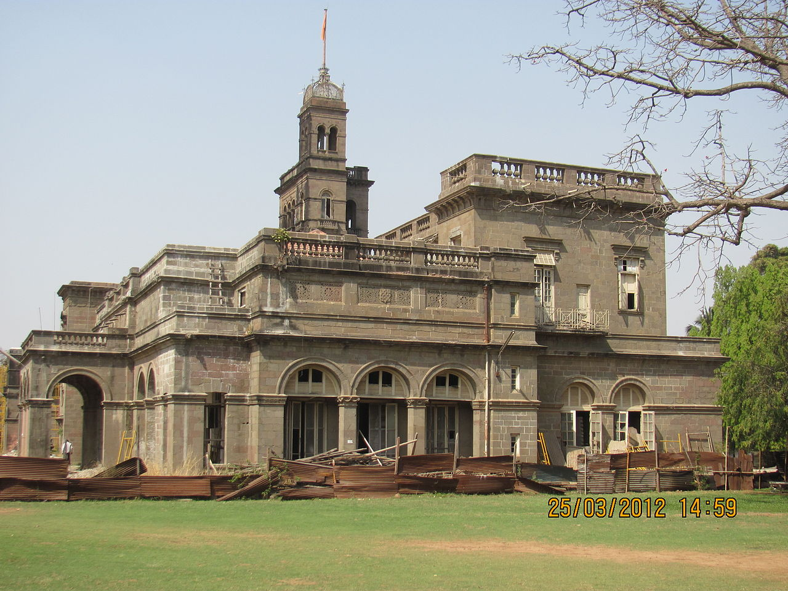

History
University of Pune was established on 10 February 1949 under the Pune University Act, passed by the Bombay legislature in 1948.[5] M. R. Jayakar became its first Vice-Chancellor.
Its first office was started from the Nizam Guest House, which is part of Bhandarkar Oriental Research Institute on Law College Road.
The university was operated at Nizam Guest House till 1 June 1949.
Its current building originally called the Governor House. As its name suggests, it was the seasonal retreat of the Governor of Bombay.[6]
Affiliations
In 1949, there were 18 affiliated colleges (including colleges such as the Fergusson College, Sir Parashurambhau College, Nowrosjee Wadia College and College of Engineering, Pune) with an enrolment of over 8000.
Thereafter, the number of colleges increased. As of 2017 the university had 43 departments,[9] 433 affiliated colleges[citation needed] and 232 recognized research institutions,[citation needed] with an enrollment of 496,531 students[citation needed] for undergraduate and graduate courses.[10]
Rankings
Savitribai Phule Pune University was ranked 601–800 in the world by the Times Higher Education World University Rankings of 2020,[18] as well as 135 in Asia[19] and 128 among Emerging Economies University Rankings in 2020.[
The QS World University Rankings of 2020 ranked it 191 in Asia in 2020[16] and 100 among universities in BRICS nations in 2019.
It was ranked 19 in India overall by the National Institutional Ranking Framework in 2020[21] and 9th among universities.